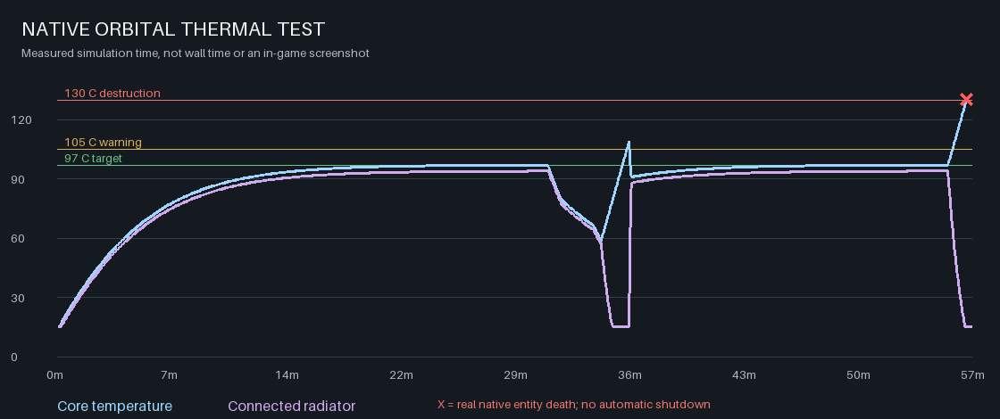
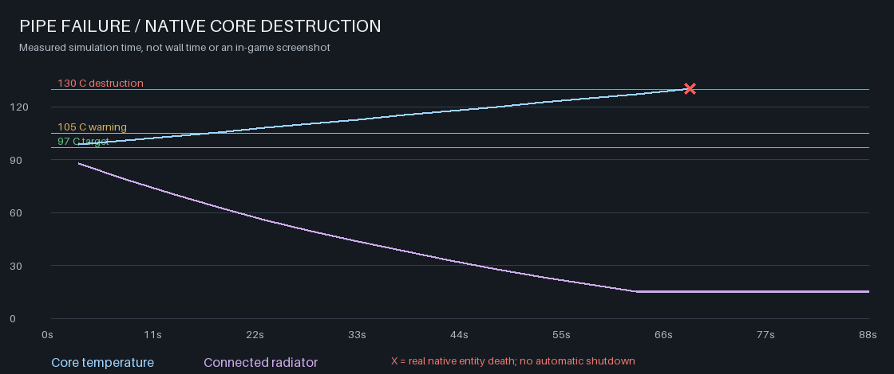

Orbital Thermal Prototype
97 C target. Physical conduits. Finite radiators. Destructive overheating.
Experimental add-on only. The main campaign and live save are unchanged. These charts show native engine measurements, not gameplay screenshots.
| Operating temperature | 97.005 C |
|---|
| Warning | 105 C |
|---|
| Native destruction | 130.075 C |
|---|
| Repair window from 97 C | 68.75 simulated seconds |
|---|
| Remaining repair time at 110 C | 41.75 simulated seconds |
|---|
| Destructions after reload | 1 |
|---|
Working, Cooling And Failing

The test includes native solar power, output backpressure, brownouts, a full outage, pipe removal, repair, a hot checkpoint, destruction and a second reload.
Ignore The Warning

Repair the conduit before burnout and the same core keeps working. Leave it disconnected and it is destroyed; loading a hot save does not erase the heat.
Scope
Supplied platform, hardware, research and capital. Native heat conduction, crafting, solar power and death. Heat generation and finite radiator rejection are scripted. The radiation law and thermal capacities are gameplay approximations.
Design and test notes | Compact measured results